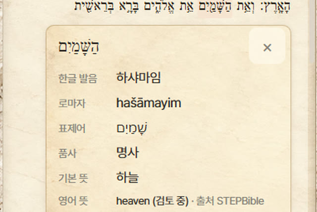
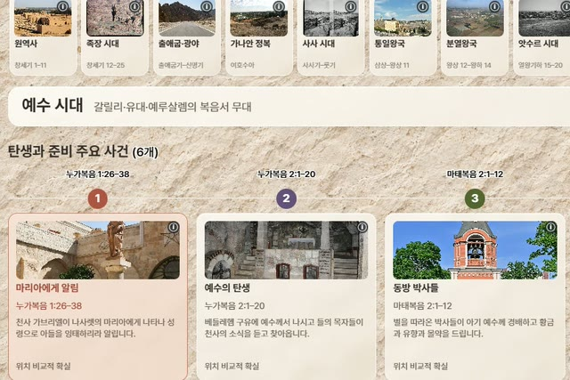
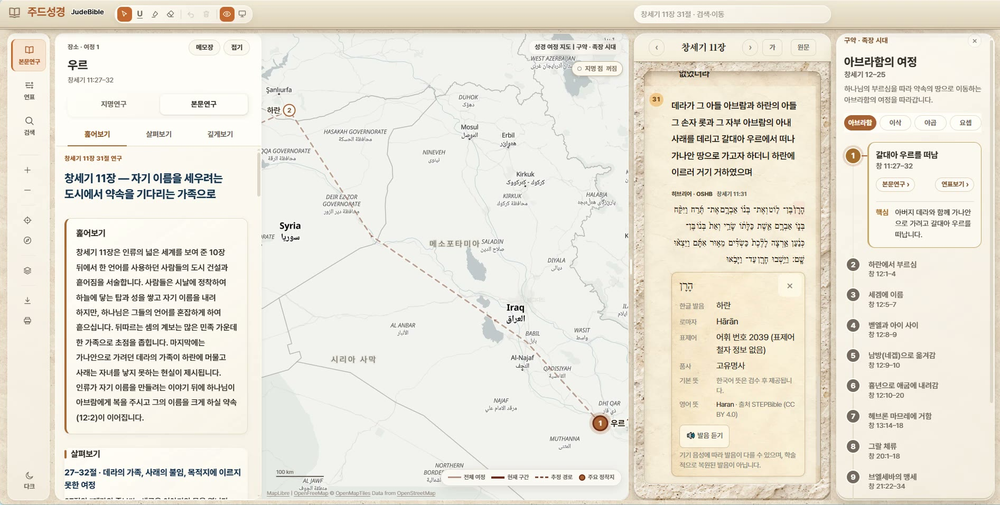
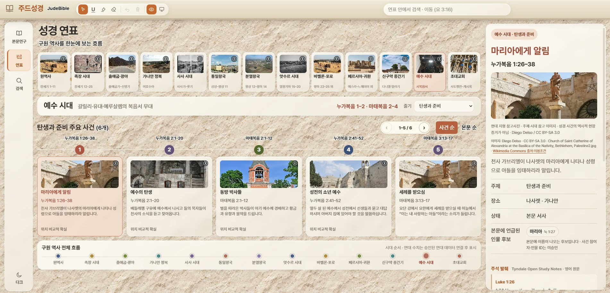
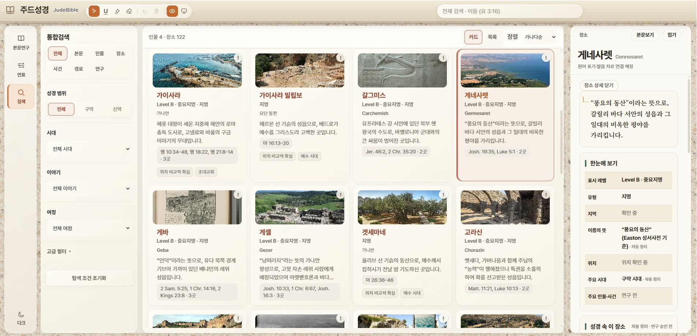
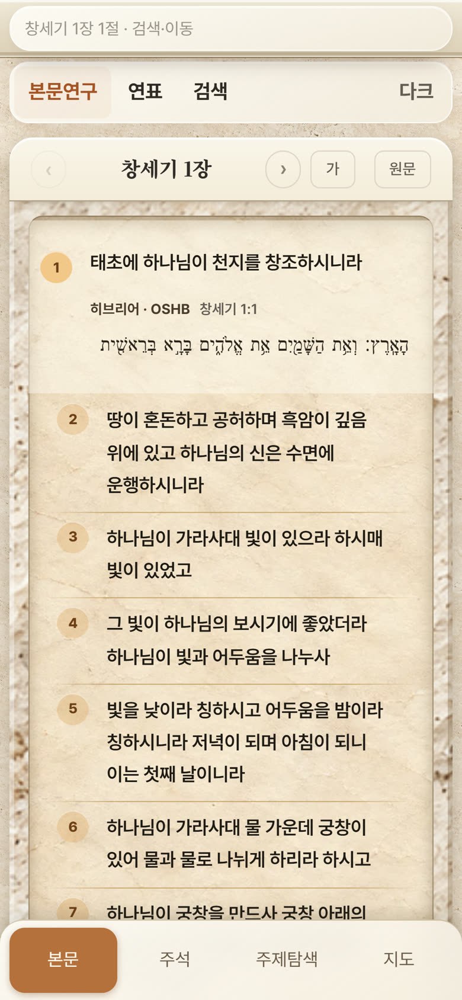

01
본문연구
본문 옆 패널에서 훑어보기 · 살펴보기 · 깊게보기 세 단계로 연구를 읽습니다. 문학 단락과 구조를 따라 한 장을 입체적으로 이해할 수 있습니다.
WHY JUDEBIBLE
말씀의 숲은 성경을 천천히 읽고 묵상하며 신앙의 사유를 넓히는 공간입니다. 그러나 한 구절이 마음에 남을 때, 우리는 자연스럽게 묻게 됩니다. 이 말씀은 어떤 문맥 안에 있는가. 원문은 무엇이라 말하는가. 이 일은 어디에서, 언제 일어났는가.
주드성경은 그 물음을 따라가기 위해 만든 연구 도구입니다. 성경의 개별 본문을 존중하면서, 그 본문이 놓인 문맥과 성경 전체의 흐름을 함께 살필 수 있도록 돕습니다.
RESEARCH PHILOSOPHY
연구는 언제나 본문에서 시작합니다. 한글 본문 곁에 원문을 두고, 본문이 실제로 말하는 것을 먼저 확인합니다.
한 절을 떼어 내지 않고, 그 절이 속한 문학 단락과 구조 안에서 읽습니다. 각 본문의 본래 의미를 지키는 것이 해석의 출발입니다.
지도와 연표, 인물과 사건의 연결을 통해 한 본문이 구원 역사의 큰 흐름 어디에 놓이는지 바라봅니다.
KEY FEATURES
지금 공개된 앱에서 직접 확인한 기능만 소개합니다.
본문 옆 패널에서 훑어보기 · 살펴보기 · 깊게보기 세 단계로 연구를 읽습니다. 문학 단락과 구조를 따라 한 장을 입체적으로 이해할 수 있습니다.

한글 본문의 절마다 히브리어 원문(OSHB)을 펼쳐 확인하고, 낱말을 누르면 한글 발음·로마자·품사·뜻이 열립니다.
본문에 등장하는 지명을 지도 위에 표시하고, 아브라함 같은 인물의 여정을 경로와 단계로 따라갑니다. 거리 측정도 지원합니다.

원역사에서 초대교회까지 13개 시대의 흐름을 한눈에 보고, 시대별 주요 사건 카드를 따라 본문의 위치를 확인합니다.
본문 · 인물 · 장소 · 사건 · 경로 · 연구를 한 번에 검색하고, 성경 범위와 시대, 이야기, 여정으로 좁혀 탐색합니다.
읽기 도구 펜·형광펜·지우개 필기, 강의 모드, 글자 크기 조절, 다크 모드를 함께 제공합니다.
APP EXPERIENCE
아래는 공개된 주드성경 앱을 그대로 캡처한 화면입니다.




화면 속 사진과 낱말 풀이, 지도 데이터의 출처와 이용 조건은 주드성경 앱 안에 함께 표시됩니다.
WHO IS IT FOR
설교 본문의 문맥과 원문, 배경을 차분히 살피고 싶은 분
본문 관찰과 해석의 근거를 직접 확인하며 배우고 싶은 분
지도와 연표로 공과의 장면을 입체적으로 가르치고 싶은 분
성경을 더 깊이, 스스로 연구하며 읽고 싶은 분
START EXPLORING
주드성경은 별도 설치 없이 웹 브라우저에서 열립니다. 아래 버튼은 주드성경 앱의 창세기 1장 1절로 연결됩니다.
말씀의 숲의 성경공부 글 끝에서도 해당 본문을 주드성경으로 바로 열 수 있습니다. 예) 성경은 어떤 책인가?